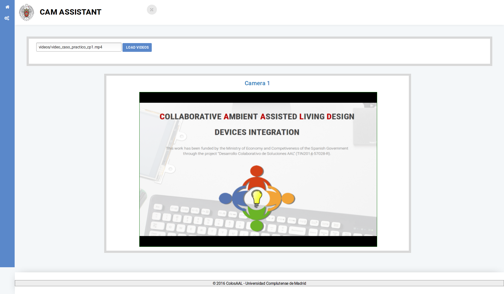
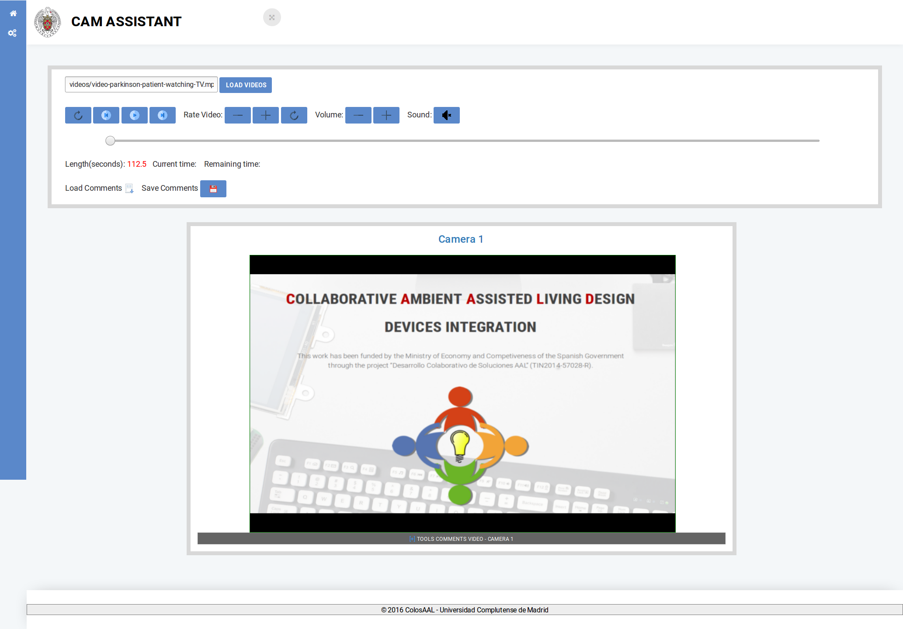
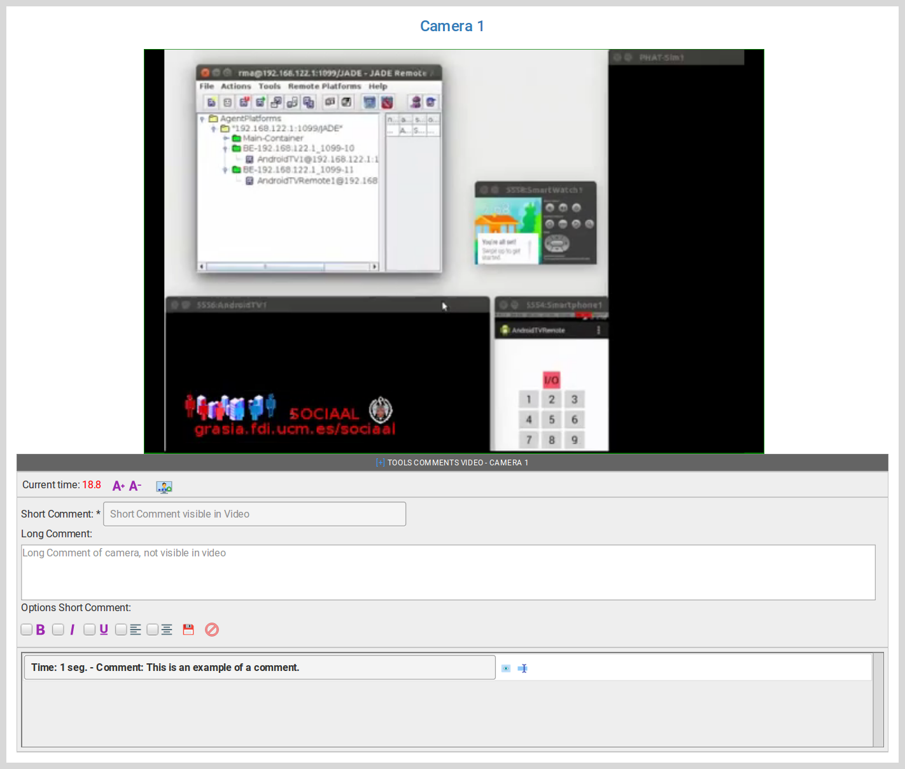
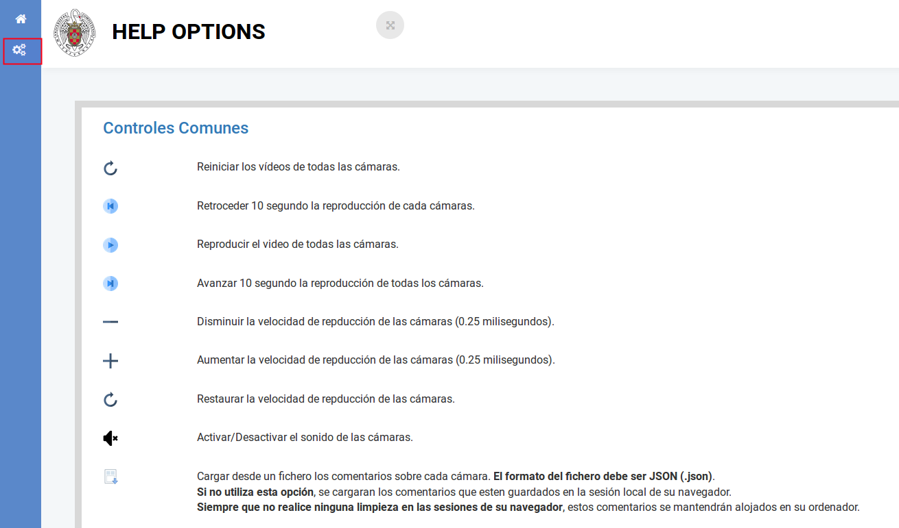

CAM Assistant
CAM Assistant es la aplicación web colaborativa que te permitirá participar en la cocreación de los casos de estudios. A través de comentarios podrás contribuir en la construcción de simulaciones realistas de los casos de estudios definidos. Cuanto mayor sea tu aporte podremos entre todos garantizar que la simulación generada puede ser útil para estudiar aquellos casos en los que los pacientes pueden verse afectados por la enfermedad o limitación que se estudia.
Durante este ciclo de trabajo, se podrán generar varias iteraciones hasta que sea posible usar la simulación como un caso práctico de estudio. Definido el caso práctico se pasará a la fase de diseñar y construir soluciones que mejoren las condiciones de los pacientes.
Mediante CAM Assistant se visualizarán las simulaciones en formato de vídeo, bien desde una o varias perspectivas (cámaras). Sobre cada cámara de la simulación podrás ir añadiendo comentarios que iran apareciendo sobre el vídeo en forma de subtítulos. Lo que se pretende es recoger tu feedback de la simulación construida bien para mejorarla o para incluir características que no se hayan tenido en cuenta en su construcción.
Participa en los Casos de Estudios
Descarga el fichero zip del caso de estudio en el que quieras participar
Descarga el fichero zip del caso de estudio que te interese y extrae su contenido en un directorio local de tu ordenador.
Una vez extraido el contenido del zip, busca el fichero "index.html" y ábrelo con el navegador Firefox de Mozilla.
Desde el navegador podrás acceder a la aplicación web para realiazar los comentarios sobre el video de la simulación del caso práctico que has elegido.
Usa la aplicación web de comentarios
La aplicación tiene la siguiente apariencia:

Carga las opciones del video de la simulación con el botón "LOAD VIDEOS". Una vez activado podrás ver todas las opciones de reproducción.

Crea tus comentarios
Visualiza las opciones de comentarios sobre cada video. Cuando el video comprenda una sola cámara o punto de vista tendrás un solo panel de visualización. Haz clic en la barra inferior del vídeo del video para mostrar los controles de comentarios.

Consulta la ayuda de la aplicación
Consulta la ayuda de la aplicación para conocer todas las opciones de la herramienta.

Interactúa con el equipo de desarrollo
Cuando hayas creado todos los comentarios que consideres, descarga el fichero de comentarios con la opción "Save Comment". Se descargará un fichero en formato json que nos podrás enviar vía email al equipo de desarrollo.
Equipo de desarrollo: jjgomez@fdi.ucm.es, marlonca@ucm.es, rpax@ucm.es